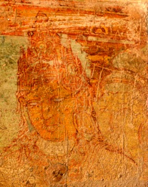

Death of Srimara Srivallabha
While the Pandya was concentrating his attention in the north against the Pallavas, the Sri Lankan king Sena II
(successor of Sena I) attacked and sacked the city of Madurai.
According to the Lankan sources, the invading king had allied himself with a rebel Pandya prince.
Army commanders of Sena II installed prince Varaguna II on the Pandya throne.
Srimara Srivallabha is believed to have died in injuries sustained in battle.